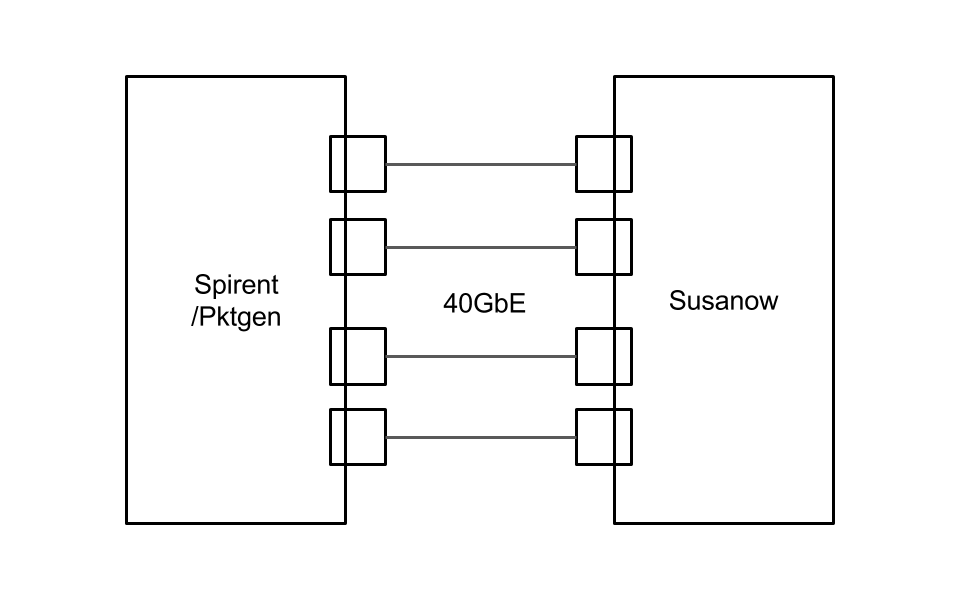

Benchmark¶
- CPU Test
- using null_pmd. calc CPU limit
- Traffic Test
- using Traffic-Generator to calc Ovserver Value
- Traffic-generator
- Pktegen-DPDK
- Spirent
- Envs (not tested)
- PC/WS (Core i7, Xeon E5, Xeon Phi)
- Tester Pktgen-DPDK, Spirent
Environment¶
Spec¶
- CPU
- Core i7
- Xeon E5 1 socket
- Xeon E5 2 socket
- Xeon Phi
- NIC
- Intel X540
- Tester
- Pktgen-DPDK
- Spirent
Eveluation Point¶
- throughput
- latency
- jitter
- power consumption